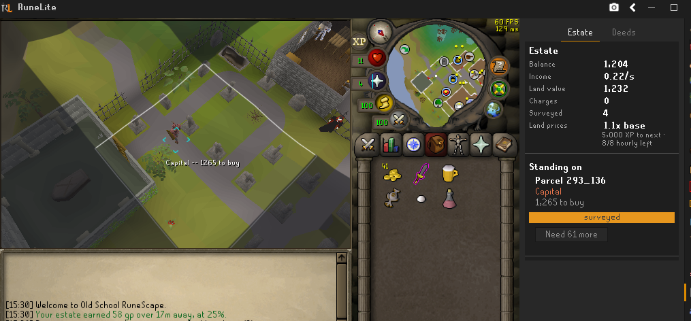
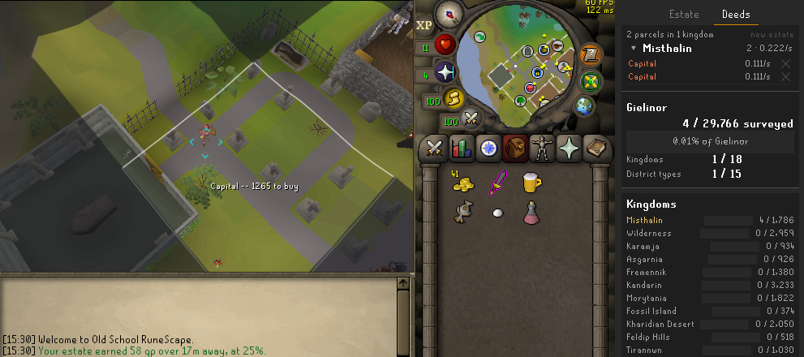

Gielinor Deeds
Own the ground you stand on.
A single-player land game played over the real Old School RuneScape map. Gielinor is cut into 115,200 parcels of 8x8 tiles, 29,766 of which can be owned. Every one was classified from the game's own cache, so the Varrock square is Capital, the fields around Lumbridge are Farmland, and scorched ground is Wasteland, each priced accordingly.
Nothing leaves your PC. No account, no server, no network traffic of any kind. Your estate is saved in RuneLite's own settings on your computer.

Deed Locked
The challenge run. It is off by default, and turning it on starts it wherever you happen to be standing.
You get that one deed and three survey charges. Everything else is dark. A charge reveals a neighboring deed and its price, and buying one is what lets you survey past it, so the map opens outward from your estate a deed at a time.
Two things drive the run and neither advances on its own. Survey charges come from XP and from leveling up, and nothing else. Money comes from rent on the land you already own.
Nothing blocks movement. The veil hides ground and the menu filter can refuse clicks if you ask it to, but you can always walk out. The run is on your honor.
With Deed Locked off the whole map is visible, you survey wherever you stand, and survey range upgrades become worth buying. Land is bought for its own sake.
Surveying
A survey takes five seconds and costs one charge. Right-click the ground and pick Survey deed, or use the button in the side panel for the deed under your feet. It is never the left-click action, so a stray click cannot spend a charge.
Charges come from playing. XP pays at a rate scaled to the level of the skill that earned it, capped at eight an hour so efficient training cannot outpace ordinary play. Leveling up pays on top of that cap.
Rent
Land pays rent every second. Time logged out pays a quarter of the normal rate, capped at eight hours, and you are told what you earned when you come back. Prices climb as your estate grows, so there is always something to save for.
The sidebar
Estate is what you are doing right now: balance, income, charges, and the deed under your feet with the button to survey or buy it.
Deeds is the map. Your holdings are grouped by kingdom and collapsed, so a large estate reads as a handful of rows rather than hundreds. Below that, the Deed Log tracks how much of each of the 18 kingdoms and 15 district types you have seen, and which of the 66 landmarks you have found.

Available on the RuneLite Plugin Hub. BSD 2-Clause licensed. Not affiliated with or endorsed by Jagex.